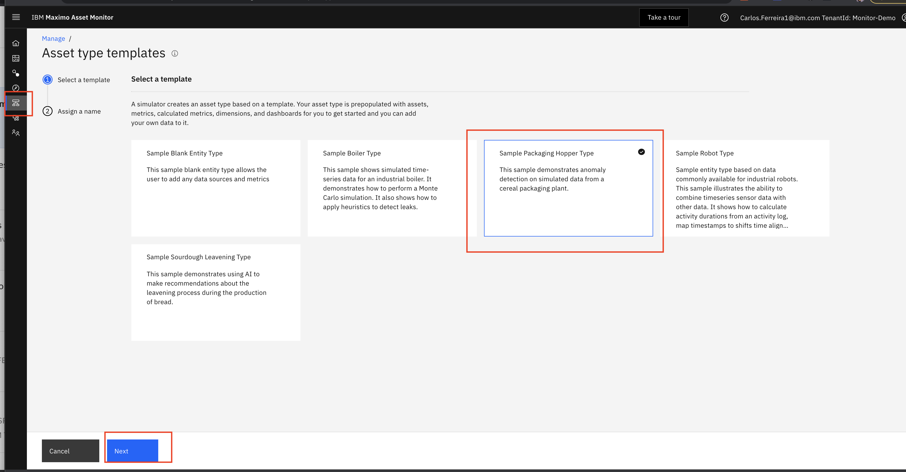
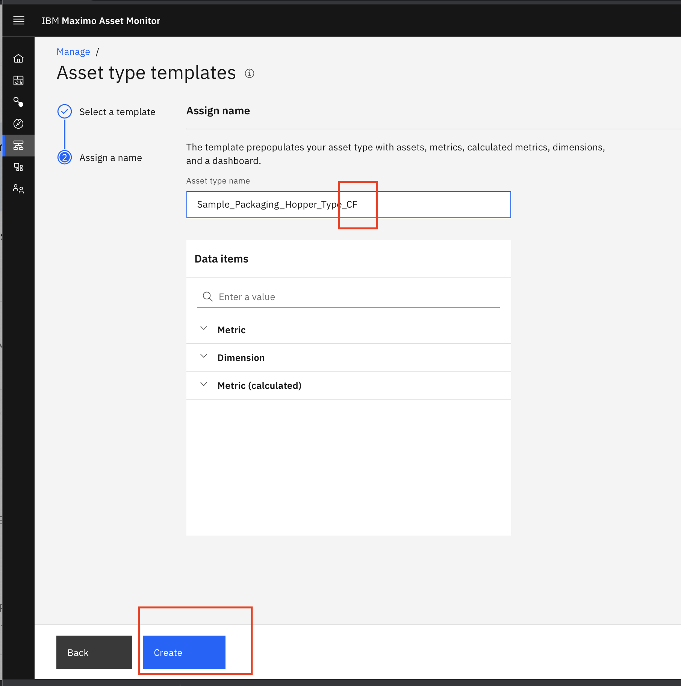
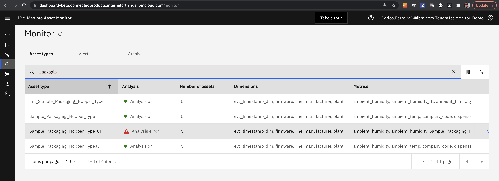
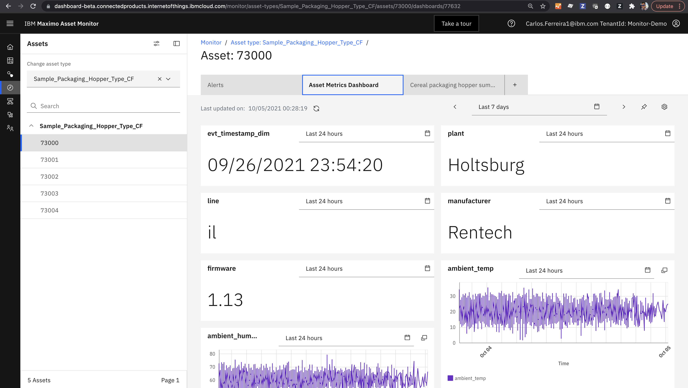

Objectives
In this Exercise using Monitor you will learn how to :
- Add built-in Monitor Packaing Hopper Asset
The Monitor built-in Packaging Hopper Asset will provide the timeseries data that you will use in the exercise to determine how frequently the ambient temperature is above 27 degrees Celcius. The food that is being packaged has a shorter shelf life when it is packaged at higher temperatures. Remote operational support teams monitor the Packaging Hopper to ensure it is operating within the required operating ambient temperature ranges and without anomalies.
Before you begin:
This exercise requires that you have completed the pre-requisites required for all Exercises Ensure you instructor has provided you the notebooks needed for this lab.
Create a Packaging Hopper in Monitor
In this exercise you quickly create some simulated packaging hopper operational time series data that you will use in
your exercises. You will analyze the data from simulated industry hopper within Monitor functions and alerts.
You will also create a constant for the maximum temperature maximum_temp in degrees celcius that is allowed.
- Click
Setupside menu to add a new asset type using aSample Packagin Hopper Typeasset template in Monitor.  - Click
Sample Packaging Hopper typeYou will create a simulated set of packaging assets (entities). - Click
Nextbutton. - Append your initials to the
Asset Type Nameand click onNextbutton.  - Note how Monitor has added 5 Hoppers with IDs of 71000 to 710004. Click on your
Asset Typeand click onSetup Asset Typebutton.
- Note how Monitor has added an instance asset dashboard for each Hoppers with IDs of 71000 to 710004. Click on your
MonitorTab  - Click on one of the Hopper assets like
73000to see it's data. 
Next Step
You now have asset time series data for 5 asset that you can analyze and Monitor. In the next exercise you will add a constant for the max_temp_celcius. The PythonFunction will use the constant for the max_temp in Celcius that the ambient temperature can be.